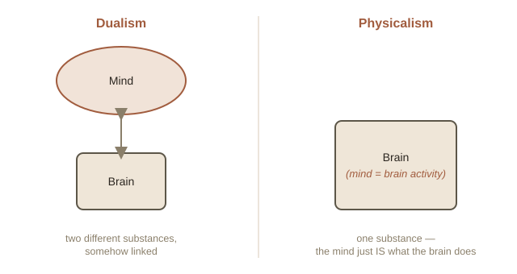

Chapter 1: The Hard Problem
Right now, you are seeing colors, feeling the texture of whatever you're sitting on, maybe hearing background noise. There is something it is like to be you, reading this sentence. Philosophers call this raw, first-person quality of experience qualia (the individual, subjective "feel" of an experience — like the specific redness of red). Philosophy of mind is the branch of philosophy that asks: what is this stuff, and how does it fit into a universe that is, as far as physics can tell, just particles and forces?
Easy problems and one hard problem
In 1995, philosopher David Chalmers split the study of consciousness into two very different kinds of problems. The "easy" problems are things like: how does the brain focus attention, how does it store memories, how does it turn light hitting the eye into a report of "I see red." These are called "easy" not because they're simple — they're extremely hard, technically — but because we at least know what kind of answer would satisfy us: a mechanism, a process, a diagram of neurons firing.
The hard problem is different: even after you've fully explained every mechanism — every neuron, every signal — why is any of it accompanied by experience at all? Why isn't all that processing just happening "in the dark," with no one inside experiencing it? You could imagine, at least in principle, a being that processes light, avoids obstacles, and even says "I see red" out loud — while having no inner experience whatsoever. Philosophers call this hypothetical being a philosophical zombie: physically and behaviorally identical to a conscious person, but with nobody home inside.
Two old answers: dualism and physicalism
The cleanest historical answer comes from René Descartes in the 1600s: dualism. Descartes argued the mind and the brain are two fundamentally different kinds of thing — the brain is physical, made of matter; the mind is non-physical, a thinking substance with no size or location. They interact, somehow, but they aren't the same thing. The obvious problem dualism has never fully solved: if the mind has no physical properties at all, how does it push physical neurons around to make your arm move when you decide to raise it?

Most working scientists and a large share of philosophers today instead hold some version of physicalism: the mind just is what the brain does — not something extra alongside it, the same way "traffic" isn't some separate substance floating above cars, it's just a word for what a lot of cars do together. This avoids the interaction problem, but it inherits the hard problem in full force: it still doesn't explain why brain activity feels like anything from the inside, rather than just happening.
A thought experiment: Mary's Room
In 1982, philosopher Frank Jackson proposed a scenario that's still argued about today. Imagine Mary, a brilliant scientist who has lived her entire life in a black-and-white room, and who knows every physical fact there is to know about color — the exact wavelengths of light, the exact way the eye and brain process them, all of it, completely. One day, she walks out of the room and sees a red apple for the first time.
Jackson's question: does Mary learn something new at that moment? Most people's instinct is yes — she now knows what red looks like, which feels different from knowing facts about red. If she does learn something new, that suggests there's more to experience than physical facts alone can capture, which is bad news for strict physicalism. If she doesn't, then complete physical knowledge really was complete after all, and her reaction was just her brain doing something new with information it already had — not learning a genuinely new fact.
Neither side of this debate has a knockout argument. That's part of why philosophy of mind stays so active: it sits exactly on the border between something science can measure from the outside and something only you can ever check from the inside.
Try this
Ideas for noticing or testing this in your own life.
- Try describing an experience in pure words: stare at a color for 30 seconds, then try to describe the actual experience of seeing it to someone else using only language — notice how the "what it's like" part never quite transmits, only facts about it.
- Notice it when you wonder about other minds: next time you catch yourself asking whether an animal, an AI chatbot, or even another person "really" experiences things the way you do, that's the hard problem showing up outside a philosophy classroom.
Worth pulling on?
A few loose threads from this chapter — if any of these genuinely grab you, that's a good sign of where to go next.
- Split-brain patients are real, not a thought experiment. Cutting the band of nerve fibers connecting the brain's two hemispheres (done historically to treat severe epilepsy) can leave a person with two semi-independent streams of awareness in one skull — one hand can act on information the other half of the brain "doesn't know about." → Chapter 2 could dig into what split-brain experiments reveal about the unity of consciousness.
- An octopus has roughly two-thirds of its neurons distributed in its arms, not its central brain — each arm can problem-solve with a striking degree of independence, which raises a genuinely strange question: does an octopus have one mind, or several loosely federated ones?
- If physicalism is true, and the mind is just what a brain (a physical information processor) does — what, in principle, would stop a sufficiently advanced computer from having genuine experience too? This is the exact question underneath today's debates about AI consciousness. → A separate topic under Philosophy: Philosophy of Artificial Intelligence.